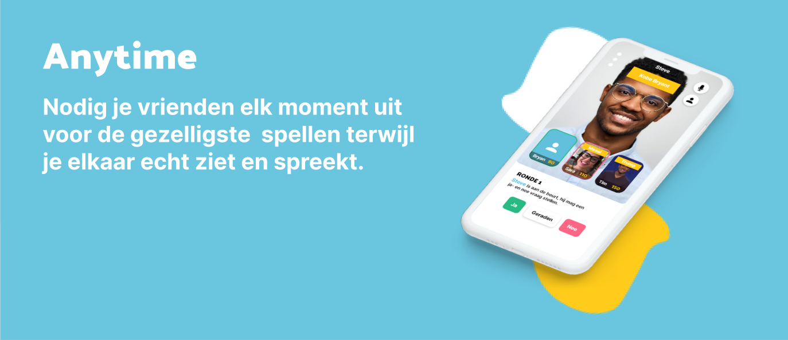
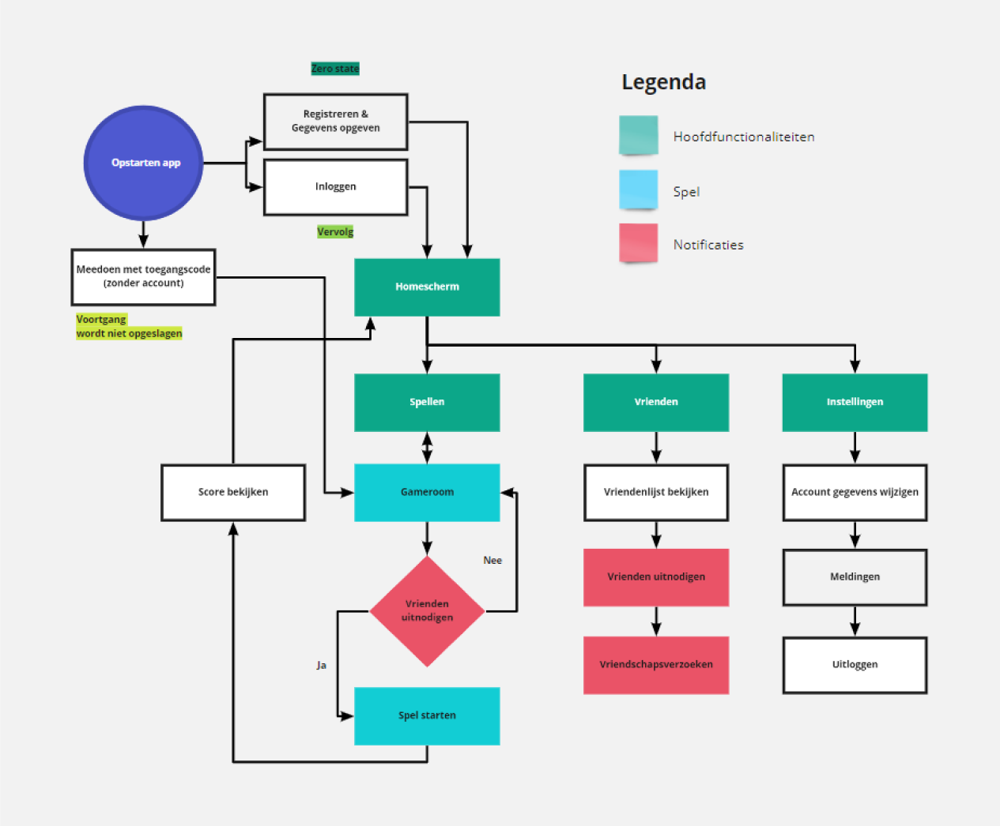
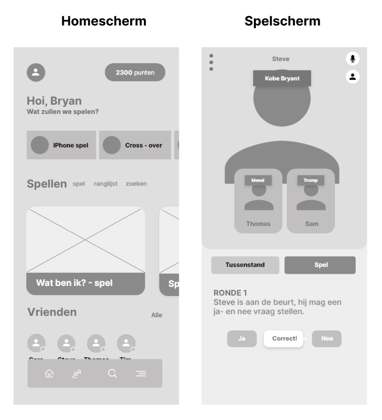
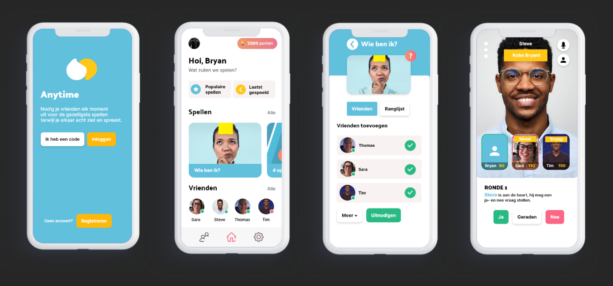

Anytime
In mijn derde jaar van de opleiding Communication & Multimedia Design heb ik voor het semester project Behavioural Design gekozen. Ik heb voor dit project gekozen omdat je hier meer leert over hoe je het gedrag van de gebruiker kunt ondersteunen of veranderen aan de hand van ethische en psychologische inzichten. In het Semesterproject Behavioural Design staat de vraag "Hoe kun je met behulp van een interactieve toepassing het gedrag van een gebruiker beïnvloeden en/of veranderen?" centraal. Gedurende de eerste 10 weken heb ik met een team aan de basis van een concept gewerkt. Dit concept heb ik in de 10 weken daarop helemaal individueel uitgewerkt en visual designed.

Centrale vraag
"Hoe kun je met behulp van een interactieve toepassing het gedrag van een gebruiker beïnvloeden en/of veranderen?"
Probleem
Jongeren tussen de 20 en 24 jaar in Nederland hebben zich tijdens de huidige corona-situatie alleen gevoeld, omdat ze weinig tot geen fysiek contact met hun vrienden konden hebben. Toch was de drang voor veel jongeren groot om elkaar te blijven opzoeken, waardoor een kwart van de coronabesmettingen in Nederland, jongeren tussen de 20 en 24 jaar zijn (Vermeulen, 2020). Het gevolg van dit probleem zijn besmette jongeren, die in contact komen met familie en risicogroepen. Dit zijn ouderen en mensen met onderliggende ziektes, die erg kwetsbaar zijn voor dit virus en er in het ergste geval aan kunnen overlijden (RIVM, 2020). Om dit probleem te voorkomen, heb ik een concept bedacht.
Concept
Mijn concept is een applicatie die jongeren helpt om minder alleen te zijn zodat de jongeren elkaar minder fysiek hoeven op te zoeken, waardoor de besmettingen minder worden en de risicogroepen beschermt blijven. Dit pas ik toe in mijn concept door jongeren te laten samenspelen in online games waarbij ze elkaar kunnen zien en spreken en ze hun scores in ranglijsten kunnen volgen. Ze kunnen elkaar online zien in spelrondes om de spelbeleving te versterken. Daarbij wil ik de focus leggen op een leuke en speelse ervaring met vrienden wat zich uit in intrinsieke motivatie. Deze vorm van motivatie richt zich niet op specifieke beloningen maar resulteert in interne beloningen. Hierdoor krijgen de jongeren meer positieve gevoelens, voelen verbondenheid en een gevoel van voldoening. Hierdoor zullen de jongeren eerder zelf terug komen in de applicatie en elkaar minder fysiek hoeven op te zoeken.
Proces
Om te bepalen wat er op de schermen komt in mijn concept moest ik gaan bedenken welke stukjes proces ik op de schermen wilde laten zien.
ik heb daarvoor sticky notes op lege schermen geplakt om de functionaliteiten per scherm te bepalen. daar kon ik dan vervolgens een
screenflowchart van maken om de flow in mijn concept helder te krijgen.

Schetsen
Schetsen
Nadat ik heb bepaald welke functionaliteiten op de schermen zouden komen ben ik aan
de slag gegaan met het schetsen en vormgeven van de keyscreens. Hoe gebruikers in de applicatie kunnen komen wanneer ze een account hebben, wat ze op het homescherm zien en hoe de spelomgeving eruit zou komen te zien.

Ontwerpen
Na het scheten ben ik inspiratie gaan op doen voor een moodboard. Op mijn moodboard ben ik op zoek gegaan naar speelse kleuren, game fonts en vormen die ik wilde gaan maken in mijn applicatie. Ik heb voor een rustige sfeer gekozen met meer witruimte omdat ik denk dat je ook met veel witruimte voor een
speelse sfeer kan zorgen. Ik wilde wel ronde vormen gebruiken om de speelse sfeer te behouden. Het kleurrijke laat ik terugkomen en ik gebruik blauw en oranje als primaire kleur.
